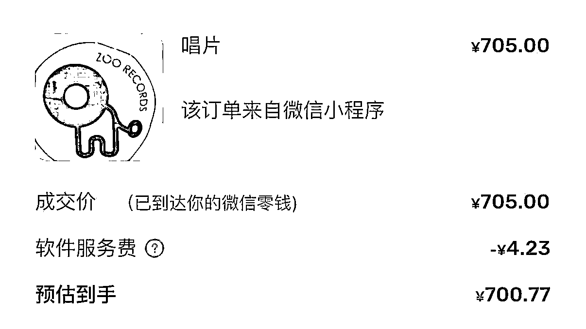
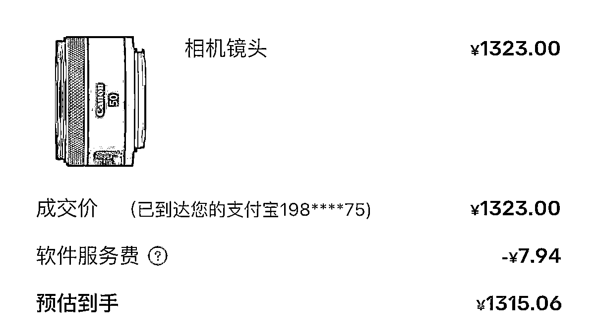

来源：https://mcn7wq4d3bpm.feishu.cn/docx/G51DdbGmuo4kCPxXVGjc6WBanDl
哈喽 大家！我是花岗岩，爱好搞钱，积极探索第二增长曲线！具体如下：
1、小红书自媒体商单，从 0 到 1 搭建账号，12天起号，涨粉 2 万 +；
2、小红书虚拟产品，一周内跑通0-1，矩阵账号放大中，主做编制上岸考试方向；
3、利用中介思维在小红书挖掘需求：协助转租房源，累计佣金5K+、香港代购月均纯利15000+；
4、深圳周末社交组局，创建一起摇摆系列活动，涵盖爬山、烧烤、骑行、交友等形式，好评满满。
【我可以提供什么资源】
1、 普通人做小红书商单号、小红书店铺的一些经验
2、深圳南山大冲周边高端小区的租房资源
3、top学校（清北复交人等）优质单身男女社交圈
做这个香港代购，全是因为我朋友在香港上班，经常往返深圳，吃饭聊天时突发奇想，怎么利用这个机会搞点小项目，起码把往返路费赚回来。因为我之前做过小红书自媒体商单、虚拟产品、帮人转租房子，拿到过一些结果，深知现在小红书流量越来越大了，对平台规则也比较熟悉，所以立马就打开小红书开始搜“香港代购”、“求带 switch”“香港什么值得买”“港深通勤”等词。
一搜就发现，诶？果然有点东西，我们发现拍立得这个产品在小红书讨论度蛮高的，光首页就刷出十多个求代购的帖子，有的评论区里几十个人在问能不能带，查了一下价格，香港比内地便宜，信息差这不就来了嘛！！二道贩子，我的最爱~
吃完饭，当天就和朋友说定了：我负责搞流量接单，他帮忙带货，赚的就是价格差。这事儿最吸引我的就是简单，普通人能上手，而且需求一直有，除了拍立得之外，大一点的比如说数码产品，相机、镜头之类的，小的比如相纸、唱片、之类的，我们现在做得多了，还会帮忙寄东西，收东西之类的，回头客也多，启动成本几乎为零。成绩具体如下：
📱账号：1个小红书账号；
💰利润：15000+ （月均7500左右，单价几百到几千都有）；
📅时间：6月16日开单至今；
🧭平台：小红书，这个平台流量真的越来越让人惊喜了，我有时候小号留个言，过了好久，还有人来找。
🧧赚钱逻辑：利用香港和内地之间的信息差赚取差价。通过朋友人肉带货，零成本启动，无需囤货，客户先付定金再采购。
部分成交截图如下：


准备阶段：包装账号 & 找对标🔥：建立信任，高效起号。
因为我前期做过一些相关项目，对小红书平台有一定了解，所以直接就开干了。
实施阶段：获客技巧📝：快速获取第一批精准客户。
不管什么项目，说到底都是搞流量。
转折点：发现“异常值”：挖掘爆品，实现利润突破。
如果只是单纯代购相机、相纸这些，每个月利润差不多在3000-4000左右，因为有一些是长期合作的后端，相对稳定一些。这次我们能破万主要是挖掘到一个异常值。接下来就展开说说。
为了保障交易安全，跟客户通常走咸鱼平台，双方都比较放心。有一天晚上在外面散步，接单后就在咸鱼上架了一款产品，立马有5个人过来问。当谈好的顾客拍下后，我迅速再上了一单，后台还有几个在问。好歹也是在生财浸泡这么久的了，那一刻我很确定就是它了，异常值出现了！还散什么步，赶紧回家搞钱了！
回到家，立马就开始对接后台的客户！当前后大概有13个左右，其中，有个客户说他有多少收多少（估计也是个二道贩子）。我搜了一下小红书关于这个产品，热度很高，主要是因为香港那边在搞活动，所以价格比国内电商平台低很多，评论区也有在“求购”的，我盘算了一下，即使对方最后吃不下那么多订单，我也有信心自己出售。于是，在谈好价格之后，立马再定了 30 台，隔天又下了几十台，前后共计 100 台左右。后面全部顺利交付，稳稳 100 台利润，落袋为安。
客户维护与收尾🤝：建立口碑，实现复购。
⚠️需要注意的点：
过关检查
这个项目说简单也简单，有门槛倒是也有一点，最最明显的就是海关规定。
海关对带的东西品类、数量都是有规定的，刚开始没太注意，有次带拍立得就被拦住了，说超过自用数量。折腾了俩小时才弄好，货也被扣了。原本当天能发的货，拖到第二天，有个客户急着要送朋友，催了好几回，差点退单。所以大家一定要提前弄清楚海关规定，别带违禁品，数量也别超标，为这么点钱不值当。
货品性质
因为我们现在拿的大部分都是电子产品，港版的分水货、行货，要提前问清楚客户要哪一种的，价格也不一样。
如果是护肤、彩妆、包包那种，就涉及到正品还是高仿了，那些我还没涉及，后续如果有做的话，就再分享。
可复制的流程
可沉淀的资产
客户微信列表是最值钱的，我给每个客户标了“数码党”“学生党”等标签。小红书图片模板也能复用，比如每周五发“今日过关，可带急单”，配张通关现场图，评论区经常有人问。
普通人复制的门槛
真没啥门槛。会刷小红书、能打字聊天就行，不用囤货，客户先付定金再采购，没有资金压力。每天花 1-2 小时刷帖留言，学生、宝妈、上班族都能做。
加入生财也有一段时间了，从一开始的各种尝试，到一步步聚焦，在小红书上也尝试了很多项目，我属于有个想法，开始分析，分析完觉得有搞头，就开始做，不带一丝犹豫的类型。代购是最最最简单的一个了，天花板不高，但是能最快获得正反馈，反正刷手机也是刷手机，评论几个帖子、私信几个博主，也不费事，成了就赚点零花钱，不成也没啥成本。有需要的也可以多交流，知无不言，言无不尽。
那天心血来潮在生财好事分享了收益情况，三七鼓励我分享一下，于是就有了这篇复盘贴，感谢鱼丸、七天、楞楞帮忙审稿给出建议。再次感谢生财这个平台，在我状态不好的时候，心力不足的时候，也能找到前进的方向，让我知道只要留在牌桌上，就有可能赢，搞钱没有我想的那么简单，但是也没有我想的那么难。我也一直在进步，在主业之外探索了更多可能性，从第1块钱，到千级，再到万级，期待解锁下一阶段的成果。